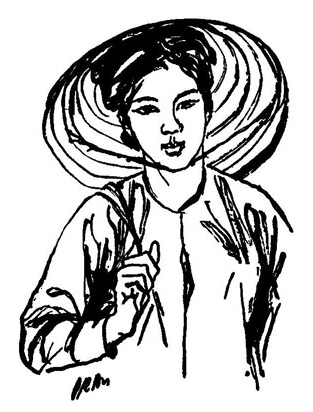

En drøm om Vietnam
I natt drømte jeg om Vietnam. I drømmen møtte jeg ei kvinne som insisterte på at jeg hadde veldig mye å lære om landet hennes og om folket. Hun snakket og jeg lyttet og hun sa mye som jeg tror må være sant.
Jeg har mye å lære om Vietnam.
Da jeg våknet kjente jeg en sterk skuffelse over at jeg våknet før vi fikk snakket ferdig samtidig som jeg forundret meg over hvordan det kan være mulig å ha en slik drøm. Hun var så virkelig og så annerledes enn en hvilken som helst fantasi som man kan ha mer eller mindre kontroll over.
I minuttene etterpå kunne jeg fremdeles føle både Vietnam og henne som noe fysisk, fylt av detaljer, lukt, smak, syn. Jentene i kjeglehatter som arbeidet ute på rismarkene. Trærne, graset og skyene på himmelen. Hennes alvor når hun snakket til meg. Forsøket på å få meg til å forstå … noe. Noe som var viktig og djupt og vanskelig.

Illustrasjon: © Diep Minh Chau, 1967.
Jeg tror at jeg aldri kommer til å reise til Vietnam. Jo eldre jeg blir, dess vanskeligere synes det å bli for meg å rive meg løs fra min vante flekk på Jorda.
Jeg liker nemlig rett og slett ikke å reise.
Helt siden de voldsomme og brutale og nærgående fantasiene jeg hadde da jeg var langt inne i fortellinga om Lien, Buoi, Sao og de andre “hovedrolleinnehaverne” i boka Nord for Saigon1 har jeg antakelig aldri vært så nær Vietnam som i denne drømmen, denne natta.
Og jeg tenker på hva det var hun egentlig prøvde å si til meg, denne navnløse kvinna i drømmen. Jeg vet jo at jeg ikke har skjønt stort, at jeg ikke helt forstår, at jeg har mye å lære. Uansett om min gode venn Mai The i sin tid forsikret meg om at “du vet mye om Vietnam”.
Men det er også noe annet og noe kanskje like viktig som murrer djupt inne i tankene.
Indianerne mente at drømmeverdenen var like virkelig som den våkne verden. Og det å ha en drøm som dette, som på mange måter var enda virkeligere enn virkeligheten og som nekter å slippe taket til og med nå når jeg nå er lys våken, det virker på mange måter foruroligende og forstyrrende på mitt ellers så materialistiske verdensbilde.
Hvor virkelig var hun egentlig, hun som kom inn i drømmen min? Eksisterer hun kanskje et sted? Var jeg i hennes drøm mens hun var i min?
Fristende tanker som det kunne være ganske lett å falle for, og som slett ikke lar seg avvise sånn med en gang og med drømmen bare godt og vel en halv times tid unna.
Og hva ville hun egentlig si meg, som hun bare delvis rakk å forklare før jeg våknet? Hvordan kan jeg egentlig ennå kjenne lukt og smak og jorda under føttene og høre henne snakke på sitt eget språk som jeg i drømmen uten vansker forstår?
Så ble det altså tross alt ei natt med flere spørsmål enn svar, men også med noe som igjen vekker og bevarer drømmen om Vietnam. Kanskje hun også ei annen natt vil la meg besøke henne i huset i utkanten av rismarkene, og fortelle meg det som hun mener jeg må vite men ikke vet. Utenfor og hitenfor både beretningene om Trungsøstrene og de omkring skarpskytterjenta Buoi og de ti jentene til Nguyen Thi Lien som i januar 1968 beseiret en amerikansk tropp ved Hue. Og som utvilsomt virkelig er sanne, men som likevel ble min fantasi.
I en roman en gang østenfor vest, bortenfor måne og nord for Saigon.
Fotnote:
-
Les mer om Nord for Saigon her:
Arkivet > Bøker > Nordforsaigon
Her finner du et utdrag fra romanen: